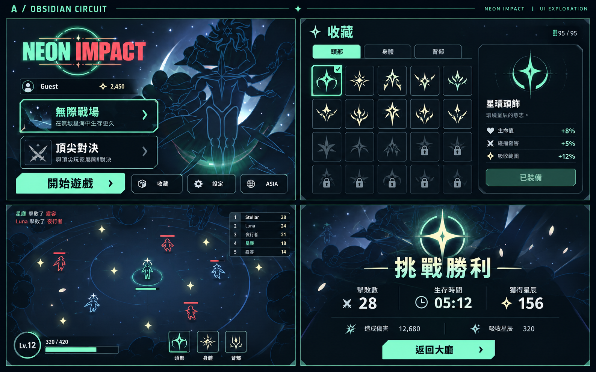

NEON IMPACT / ART DIRECTION / 2026.10.22
同一款遊戲，三種完整 UI 方向。
以現有宇宙角色與霓虹戰場為基礎。每套展示大廳、收藏、戰鬥 HUD、結算；下方列出其餘介面的統一方式。本頁是視覺提案，尚未套入 Unity。
適合的方向
取捨
動態語言

點圖可開啟原尺寸。AI 概念圖中的技能圖示、名稱、數字與部分用字為示意；正式實作會使用既有資料與正確繁中，並保留原操作規則。
每個 UI 都納入同一套規格
以下是依現有專案介面盤點的改版範圍。組隊競技仍維持未開放狀態。
| 介面／流程 | A · 曜黑競技 | B · 星儀神殿 | C · 超新星街機 |
|---|---|---|---|
| 大廳／名稱／模式 | 主模式大卡、單一亮色開始鍵 | 星儀角色舞台、安靜的金色主按鈕 | 大字標題、拼色模式卡 |
| 收藏／商店 | 整齊卡片網格、明確持有與鎖定 | 星圖式目錄、細線選取框 | 圖形卡片、部位分色頁籤 |
| 技能詳情／購買確認 | 右側詳情欄、效果與價格對齊 | 星徽與精簡條列、金色確認鍵 | 放大圖示、清楚數值區塊 |
| 對決五技能編排 | 五格固定順序、醒目當前選取 | 五枚星盤節點、清楚連接順序 | 五張編號卡、目前槽位反白 |
| 配對等待／取消／VS | 計時與狀態集中、取消隨時可見 | 雙星逐步對位、名稱保持靜止 | 兩張玩家卡對位、短促入場 |
| 戰鬥 HUD／生命／技能 CD | 低遮擋深色資訊條、環形 CD | 細星環技能框、低裝飾 | 深色戰場加小面積奶油色資訊塊 |
| 場內排行榜／擊殺訊息 | 緊湊五列、自己一列加標記 | 淡金名次、自己的星徽標記 | 清晰序號、自己以色條標記 |
| 獲得技能／升級／提示 | 短暫頂部提示、圖示與名稱 | 小星光聚合、簡潔文字 | 短促星形標籤、快速收起 |
| 勝利／失敗／復活入口 | 大結果、小數據、清楚下一步 | 星環勳章、細線統計區 | 海報式結果、大數字統計 |
| 喊話／文字編輯／儲存 | 左側事件類別、右側預覽 | 安靜的文字面板與星紋預覽 | 對話泡泡預覽、清晰儲存狀態 |
| 設定／聲音／語言／地區 | 側邊類別、標準滑桿與下拉 | 細軌道滑桿、明確對比 | 大範圍滑桿、墨色選取狀態 |
| 教學／分頁 | 聚光標示操作目標、一步一頁 | 細星路串連步驟 | 大圖示、短句、明確頁碼 |
| 確認／錯誤／斷線／重試 | 統一對話框、主次按鈕分明 | 簡單深色面板、節制警示色 | 高對比訊息卡、直接的操作標籤 |
| 載入／轉場 | 小星徽與進度、狀態文字 | 緩慢轉動的星盤、狀態文字 | 星形逐格變化、短轉場 |
| 未開放入口 | 降低強調並標示尚未開放 | 收斂的鎖定星徽 | 低飽和卡片加尚未開放文字 |
保留現有角色、95 技能與兩種已完成模式。
畫面數字、圖示與技能名稱為概念佔位；實作時綁定原本技能與經濟資料。
裝飾字體僅用在標題，繁中正文使用清楚易讀字型。
狀態不能只靠顏色，搭配文字、圖示或外框；禁用和未開放皆有明確說明。
背景特效在文字區域降亮度，保留四周安全距離；支援1280×800、1920×1080和較寬比例。
統一按鈕正常、滑入、按下、鍵盤焦點、禁用及處理中狀態。
Kreds、Premium與外部排行榜保留服務未設定狀態，不因改版顯示為可用。